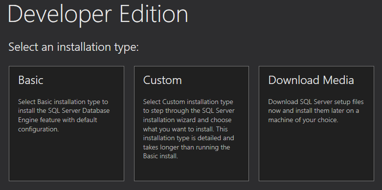
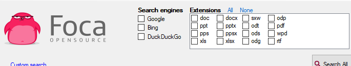

FOCA
Esta técnica se denomina extracción de metadatos, que se tratan de una serie de datos que describen otros datos como PDF, word, etc.
Estos metadatos describen cosas como el autor, el fecha de creación, software utilizado e incluso el equipo en el que se ha creado.
Esta información nos va a ser muy útil porque si conseguimos recaudar este tipo de datos que estén públicos con alguno de los métodos de recopilación antes vistos, podemos llegar a nombres de usuario, correos, versiones de sistemas y software que podemos usar para buscar entradas o vulnerabilidades de nuestro objetivo.
La herramienta que vamos a estar usando ahora se trata de FOCA
Funciona únicamente en sistemas operativos windows.
https://github.com/ElevenPaths/FOCA
Hay que tener en cuenta se necesitan las siguientes herramientas adicionales para su uso:

https://www.microsoft.com/es-es/sql-server/sql-server-downloads

Seleccionamos la básica.
Una vez instalado tenemos que tener el cuenta el nombre de la instalación que por defecto es localhost.
Iniciamos FOCA y le indicamos la localización de la base de datos.
Una vez abierto este apartado será el más interesante ya que es el que gestiona los metadatos de los ficheros que queramos.
Una vez tengamos el archivo que queramos analizar pulsamos click derecho en el apartado anterior y añadimos fichero.


Para evitar tener que ir archivo por archivo foca nos proporciona una herramienta de proyectos.

Indicamos el dominio o subdominios

Y le indicamos que tipo de ficheros y qué motores de busqueda quieres usar.


Seleccionamos los que nos interesen y descargamos los documentos a la máquina.